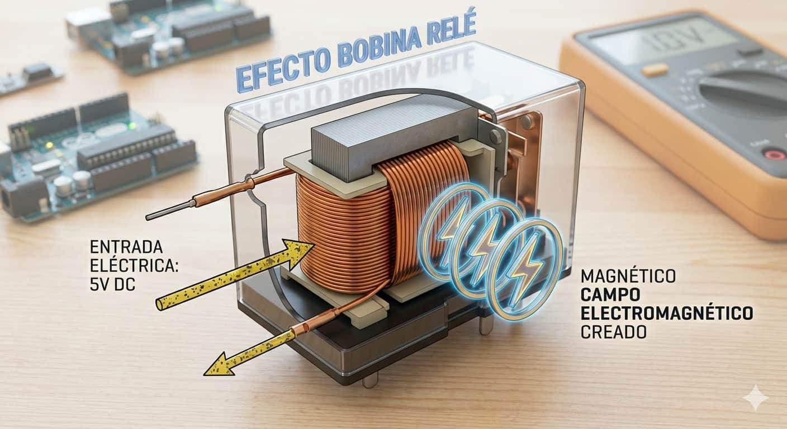
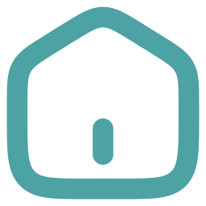
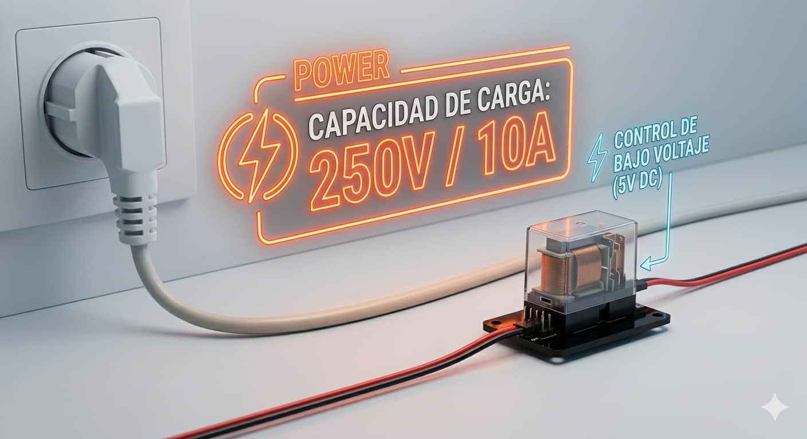
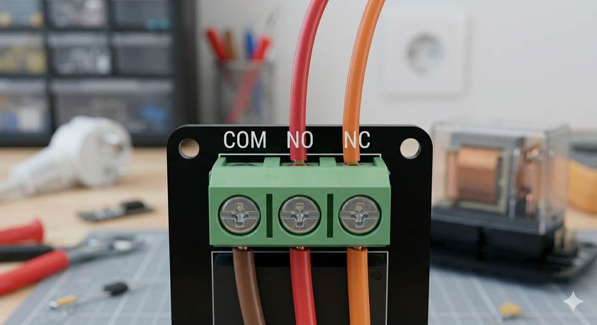
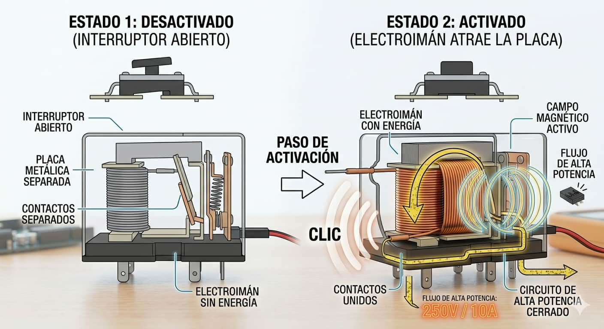
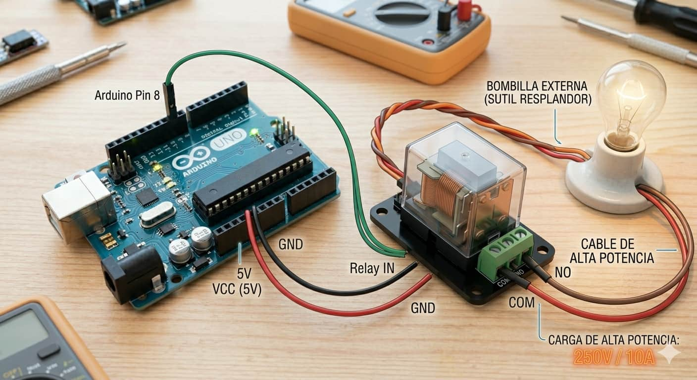

Voltaje de Bobina

Para proyectos educativos, seleccionamos relés con bobinas de 5V, compatibles directamente con la lógica de salida de cualquier Arduino.

El relé actúa como un puente seguro entre el mundo de bajo voltaje del Arduino (5V) y la potencia de la red eléctrica doméstica. Es un interruptor electromecánico esencial para domotizar dispositivos reales.

Para proyectos educativos, seleccionamos relés con bobinas de 5V, compatibles directamente con la lógica de salida de cualquier Arduino.

Están diseñados para manejar cargas robustas, soportando típicamente hasta 10A a 250V en corriente alterna (AC).

Ofrecen tres estados de conexión: COM (común), NO (normalmente abierto) y NC (normalmente cerrado).

En su interior reside una bobina. Al recibir energía del Arduino, el campo magnético atrae una pieza metálica móvil que hace un "clic" físico, uniendo los contactos eléctricos de alta potencia. Analogía: Es como usar tu dedo para presionar un interruptor de pared, pero sustituyendo tu esfuerzo físico por la fuerza magnética.
Es vital utilizar el módulo relé que incluye protecciones integradas como el optoacoplador y el diodo de protección para salvaguardar tu Arduino.

El control del módulo es sencillo, pero recuerda que el manejo de voltajes de pared conlleva riesgos:
Un ciclo simple que alterna el estado del relé cada 5 segundos:
int relePin = 8;
void setup() { pinMode(relePin, OUTPUT); }
void loop() {
digitalWrite(relePin, HIGH); delay(5000);
digitalWrite(relePin, LOW); delay(5000);
}
Mira la implementación práctica del control de electrodomésticos con seguridad: